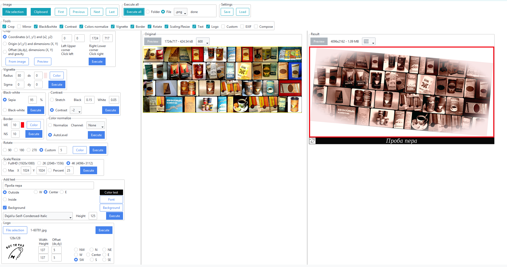
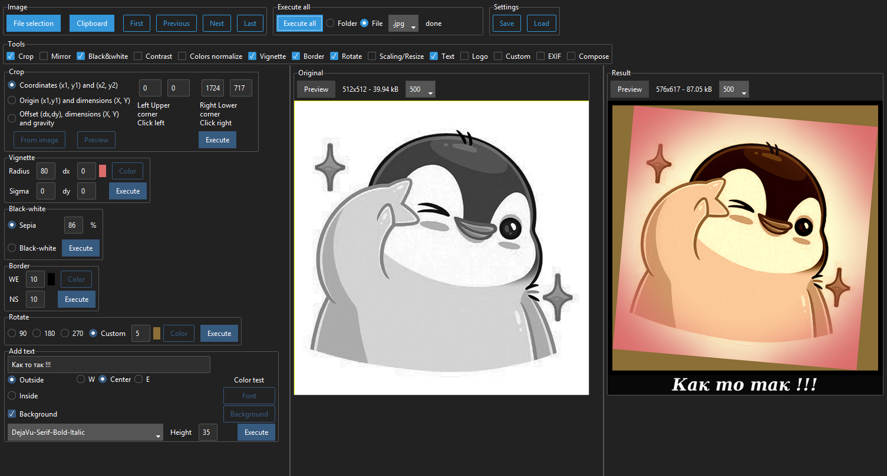
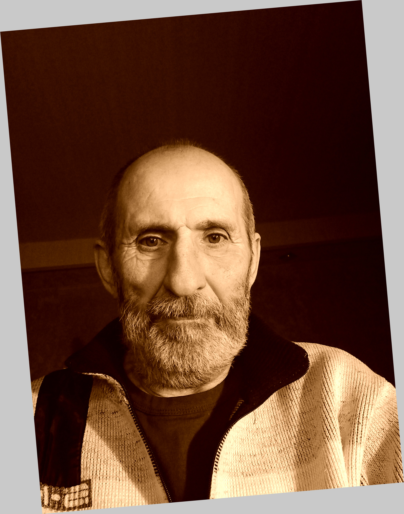

FotoKilof GUI for ImageMagick
Посмотреть, скачать:
Fotokilof - графический интерфейс для ImageMagick
Нужен установленный сам ImageMagick + Python не ниже версии 3.10, xclip. Про саму установку ниже.
Установка и работа с Fotokilof уверен проблем не вызовет.
Поддерживает не все графические форматы, так же не все шрифты с поддержкой кириллицы.
Примеры работы с FotoKilof:



Конвертация графики
масштабирование/изменение размера
обрезать
текстовая аннотация, внутри или снаружи рисунка (генератор MEMS)
рамка вокруг рисунка
вращение
зеркальное отражение (вертикальное или горизонтальное)
черно-белый
сепия - только с Wand и ImageMagick
увеличение/уменьшение или нормализация контраста
автоматическое выравнивание цвета
виньетка - только с Wand и ImageMagick
нанесение изображения логотипа на картинку
скомпоновать два изображения в одну картинку
форматы файлов: JPG, PNG, TIFF, SVG
конвертация форматов в JPG, PNG, TIFF
Функциональность:
обработка изображений в форматах JPG, PNG, SVG и TIFF
обработка снимка на лету, оригиналы в безопасности
обработка одного файла или целого каталога
получить картинку из буфера обмена и использовать ее в качестве исходной картинки
после обработки результаты копируются в буфер обмена
отображение выбранных инструментов
подбор инструментов
предварительный просмотр оригинала и результата
предопределенный поворот: на 90, 180 и 270 градусов или по индивидуальному заказу
выбор обрезков с помощью клика на предварительный просмотр или координаты
Координаты обрезки:
два угла (верхний левый и нижний правый)
верхний левый угол и ширина плюс высота
сила тяжести, ширина плюс высота плюс смещение
текст: цвет, выбор шрифта и размера, фон, поворот
Положение текста:
снаружи: снизу, слева/по центру/справа
внутри: под действием силы тяжести или по положению и вращать
кастомизированная сепия - только с Wand и ImageMagick
продувка по каналам
контраст между -5 и +5
индивидуальная контрастная растяжка
Виньетка
может быть резким или размытым
углы могут быть заполнены выбранным цветом
смещение в обоих направлениях
расположение логотипа по плотности, размеру и смещению
Распологать:
Добавить картинку справа
Добавить картинку внизу
Автоматическое изменение размера изображения
цвет заливки, если нет автоматического изменения размера
быстрая навигация по файлам: Первая, Предыдущая, Следующая, Последняя или клавиши: Home, PgUp, PgDn, End,
редактор команд: можно использовать команды ImageMagick для конвертации: например. -гауссово размытие 10х10 или -монохромное и т.д.
темный и светлый режимы
Обработка:
Есть возможность запустить одну конверсию или все выбранные конверсии.
Обработка:
обрезать
зеркало
черно-белый
сепия - только с Wand и ImageMagick
контраст
нормализация цвета
виньетка - только с Wand и ImageMagick
вращать
граница
изменять размеры
текст
скомпоновать два изображения в одну картинку
логотип
Редактируемый всегда находится на клоне картинки в памяти.
Оригиналы не изменяются.
###Установка и запуск
Требования
Windows, Linux, MacOS X, BSD,
FullHD экран для комфортной работы,
ImageMagick, не забудьте добавить путь в переменную окружения, включите установку библиотек!
%PATH%Python3.10+, не забудьте добавить путь в переменную окружения.
%PATH%
Устанавливать
Linux:
Требования к установке:
apt-get install python3-pip python3-tk python3-wand imagemagick xclipУстановите как пакет PyPi по PIP:
python3 -m pip install fotokilofWindows:
Требования к скачиванию и установке:
Python3.10+ - добавляем путь в переменную окружения,
%PATH%[ImageMagick]( ImageMagick - добавление пути в переменную окружения, включение установки библиотек!
%PATH%
python -m pip install fotokilofMacOS:
Требования к установке:
brew install imagemagick python@3.13 python-tk@3.13Для компьютеров Mac на базе Apple Silicon (M1, M2, M3) каталог установки Homebrew по умолчанию отличается от каталога установки Homebrew Intel.
Следующая переменная окружения позволяет FotoKilof правильно найти установленный Homebrew ImageMagick на компьютерах Apple Silicon Mac:
export MAGICK_HOME=/opt/homebrewУстановите как пакет PyPi по PIP:
python3 -m pip install fotokilofFreeBSD:
FotoKilof доступен через порты
pkg install py311-fotokilofОбновить:
python3 -m pip install —upgrade fotokilofRun:
fotokilof
или
python -m fotokilofТемный или светлый режим:
Нажмите клавишу F2 для переключения со светлого на темный или наоборот.